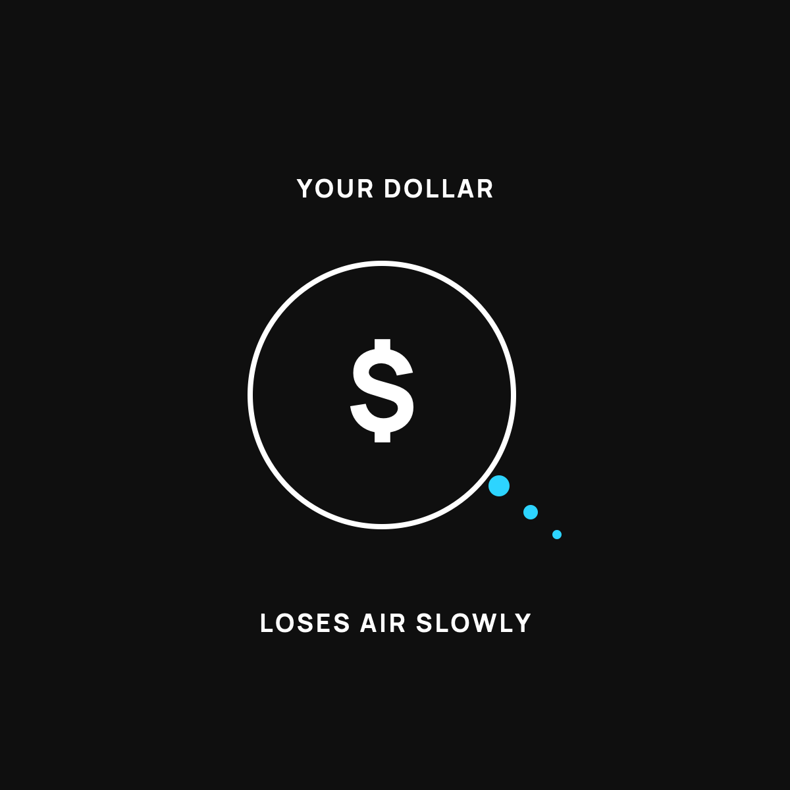

The Dollar's Slow Leak, Explained Simple
Why a dollar buys less every year, and it's not your fault.
Your dollar has a slow leak, like a tire with a pinhole. It buys a little less each year because more dollars can always be made, and more of anything makes each one worth less. That slide is what people mean by inflation. It's not your fault, but it's a reason not to keep every dollar in the spot that leaks fastest.

Your money has a slow leak. Not a dramatic one. The slow kind, the kind you don't notice day to day, until one afternoon you look up and a twenty just doesn't go as far as it used to. Here's why that happens, in plain terms.
The flat tire you can't see
Picture a tire with a tiny hole in it. Not a blowout. Just a pinhole. You can drive on it for a while and never feel a thing. But leave it alone for a month and it's flat. The air didn't vanish all at once. It slipped out a little at a time.
That's your dollar. Every year it loses a little air. A little of what it can buy quietly slips away. You don't feel it on any single trip to the store. You feel it when you stop and compare, when you remember what a full grocery cart cost five years ago.
Where the air goes
Here's the part nobody explained to you. The reason a dollar leaks value is that more dollars can always be made.
Think of it like tickets to a show. If the only way in is with a ticket, and there are 100 tickets, each one means something. Now say the folks running the show print 100 more, then 100 more after that. Your ticket still says "one seat," but there are a lot more tickets chasing the same seats. Each one is worth a little less.
Money works the same way. When there's more of it floating around, each dollar you're holding buys a little less. That slow slide is what people mean by the word "inflation." You don't have to love the word. You just have to know it describes a leak, not a one-time event.
It's not your fault, and it's not your imagination
This is the important part. If you feel like you're running just as hard as ever and somehow staying in the same place, you're not crazy, and you're not bad with money. The tire's been leaking the whole time. That's a feature of money that can always be printed, not a personal failing.
Once you can see it, a lot of confusing feelings settle down. The raise that didn't feel like a raise. The budget that keeps needing more. Some of that is the leak, quietly at work.
What you can actually do about it
You can't patch the whole tire by yourself. But you can stop keeping every dollar in a spot that leaks fastest.
Money sitting in a plain checking account is fully exposed. It's not growing, and it's slowly buying less. That doesn't mean go do something risky. It means it's worth learning about places to keep money that at least have a chance to keep up: a savings account that actually pays real interest, and, for money you won't need soon, things that are built to hold their value over time.
That last idea, keeping some savings in something that's hard to water down, is a whole topic on its own. I walked through the plain-English version of it here.
The takeaway
Your dollar has a slow leak, and the leak comes from one simple fact: more dollars can always be made. It's nothing you did. But now that you can see it, you don't have to leave all your money sitting in the one spot where the air escapes fastest.
Questions I get about this
What is inflation in simple terms?
It's the slow leak in what a dollar can buy. When more dollars get made, there are more of them chasing the same stuff, so each one buys a little less. It's a leak, not a one-time event, and you feel it when you compare a grocery cart today to one from five years ago.
Is it my fault I feel like I'm falling behind?
No. If you're running as hard as ever and staying in the same place, the tire's been leaking the whole time. That's a feature of money that can always be printed, not a personal failing. Some of the raise that didn't feel like a raise is the leak at work.
Where should I keep money so it doesn't lose value?
Money in a plain checking account is fully exposed. That doesn't mean do something risky. It means a savings account that pays real interest for near-term money, and for money you won't need soon, learning about things built to hold value. I start that conversation in What "Scarce" Means for Your Money.
New here?
Normaltown USA is plain-English money and healthcare help for normal people, written by a regular guy with a family of four. No jargon, no hype. Start here, or read the FAQ.